화장대 투샷
0.00–0.33초 · 0.33초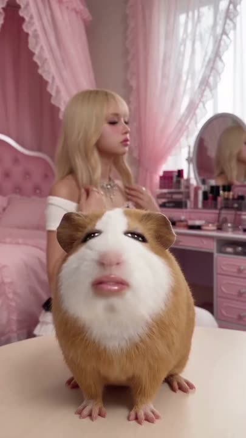

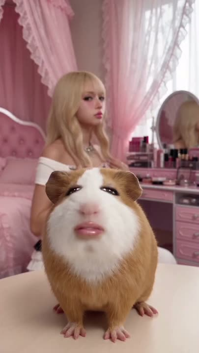
| 샷 크기 | MS |
|---|---|
| 앵글 | 아이레벨 |
| 카메라 무빙 | 고정 |
| 구도·위치 | 캐릭터 전경 중앙, 뒤 주인 |
| 화면 자막 | 없음 |
| 다음 전환 | 하드컷 |
추천 모델Kling v3 Omnikling-ai/kling-v3-omni
꾸이가 '존잘 오빠 집에서 카레 먹었다'며 주인을 소개팅시켜 줌 → 설레며 방문 → 오빠는 2D 만화 캐릭터 → 알고 보니 종이 스티커(등신대). '미안하다 꾸이…'
원본: https://www.instagram.com/reel/DdWBbk0Pcci/ · 캡션 “김꾸이한테 괜히 남소받음”
실사 주인·실사 집 + 2D 웹툰 남자의 이질감이 핵심 개그. 28초부터 남자만 만화체, 36초에 종이처럼 벗겨지며 반전.
막대 위에 마우스를 올리면 샷·자막·음성 내용이 보입니다.
선택하면 이 페이지의 모든 프롬프트에서 [CHARACTER]·[CHARACTER_2]·[MOM]·[DAD]가 자동으로 바뀝니다.
[CHARACTER] 주인공 1명character reference sheet of [CHARACTER], same character shown 5 times on a plain light-grey background: front view, three-quarter view, side profile, back view, and a close-up of the face with neutral deadpan expression; consistent fur markings and proportions in every view; photoreal studio lighting, 9:16, no text, no watermark
프레임 위 격자 = 3분할선. 색 띠 = 그 샷의 실제 색 팔레트.


| 샷 크기 | MS |
|---|---|
| 앵글 | 아이레벨 |
| 카메라 무빙 | 고정 |
| 구도·위치 | 캐릭터 전경 중앙, 뒤 주인 |
| 화면 자막 | 없음 |
| 다음 전환 | 하드컷 |
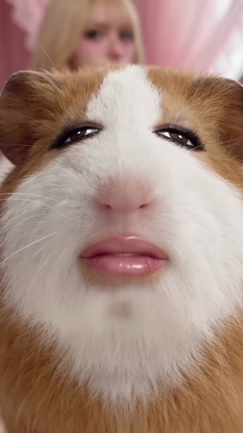
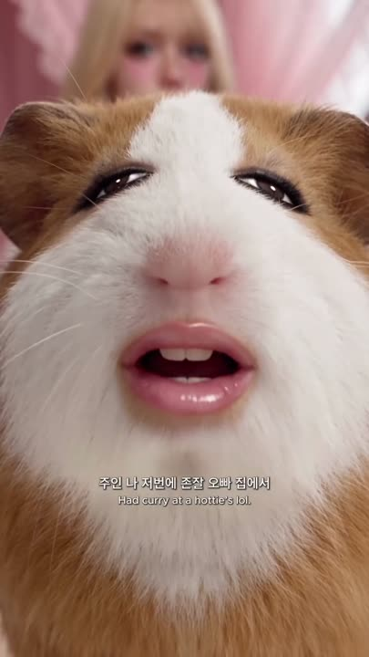
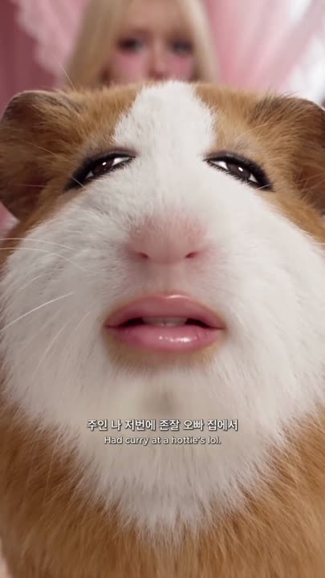
| 샷 크기 | ECU |
|---|---|
| 앵글 | 아이레벨 |
| 카메라 무빙 | 고정 |
| 구도·위치 | 입이 화면 가득 |
| 동작·표정 | 말함 |
| 화면 자막 | 주인 나 저번에 존잘 오빠 집에서 |
| 소리 | '꾸이' |
| 다음 전환 | 하드컷 |
extreme close-up of [CHARACTER]'s human-like lips speaking, hyperrealistic photograph, vertical 9:16, shot on a full-frame cinema camera, soft natural light, shallow depth of field, crisp individual fur strands, subtle film grain, no text, no watermark, no logo
Its lips move as it talks. Vertical 9:16, photoreal, keep the character identical to the reference.
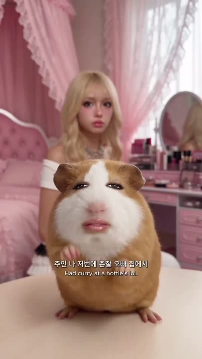
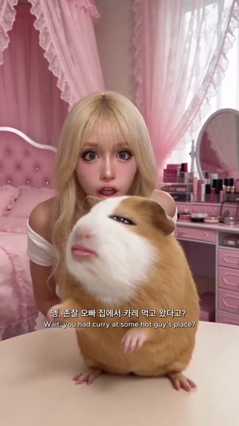
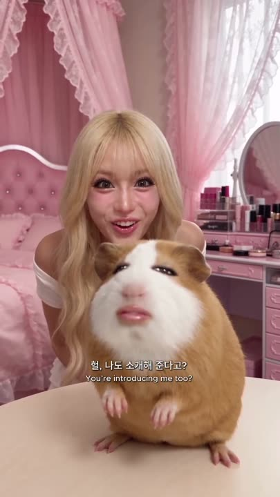
| 샷 크기 | MS |
|---|---|
| 앵글 | 아이레벨 |
| 카메라 무빙 | 고정 |
| 구도·위치 | 캐릭터 전경 중앙(테이블 위), 뒤 주인 얼굴, 분홍 공주 방 |
| 동작·표정 | 캐릭터 자랑 → 주인 놀람 → 제안 → 설렘 |
| 화면 자막 | 카레 얻어먹고 왔어~! 또 가고싶어 / 엥, 존잘 오빠 집에서 카레 먹고 왔다고? / 주인도 소개해줄게! 같이 가자! / 헐, 나도 소개해 준다고? |
| 소리 | '꾸이' + 주인 대사 |
| 다음 전환 | 하드컷 |
[CHARACTER] sitting on a vanity table in a pink princess bedroom with lace curtains, a young woman with long blonde hair and bangs behind it leaning in, medium shot, hyperrealistic photograph, vertical 9:16, shot on a full-frame cinema camera, soft natural light, shallow depth of field, crisp individual fur strands, subtle film grain, no text, no watermark, no logo
They chat: the character brags, the woman reacts surprised then excited. Static camera. Vertical 9:16, photoreal, keep the character identical to the reference.
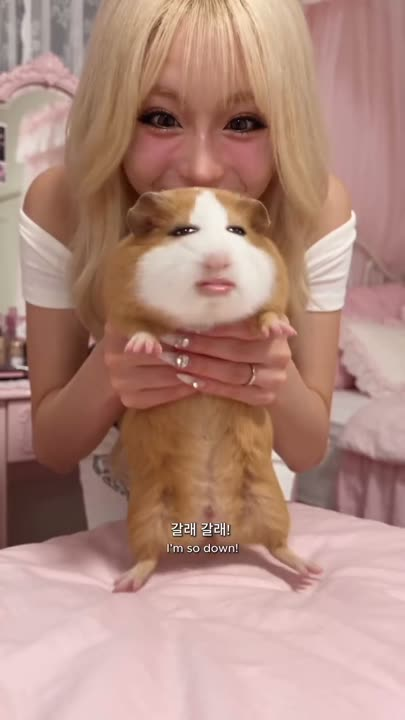
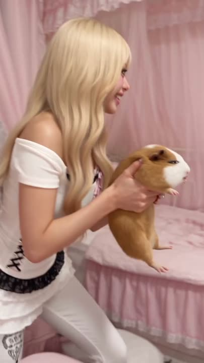
| 샷 크기 | MS |
|---|---|
| 앵글 | 아이레벨 |
| 카메라 무빙 | 핸드헬드 |
| 구도·위치 | 주인이 캐릭터를 들어 올림 |
| 동작·표정 | 들고 신나서 나감 |
| 화면 자막 | 갈래 갈래! |
| 소리 | 주인 대사 |
| 다음 전환 | 하드컷 |
She lifts the character happily and hurries off. Handheld. Vertical 9:16, photoreal, keep the character identical to the reference.
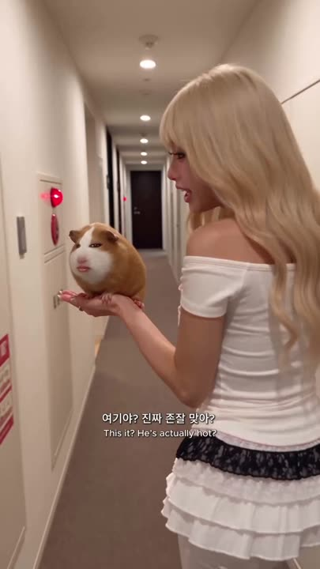
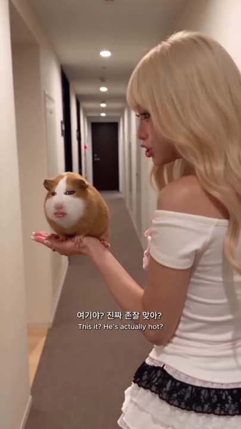
| 샷 크기 | MS 뒤따라가기 |
|---|---|
| 앵글 | 아이레벨 |
| 카메라 무빙 | 팔로우 |
| 구도·위치 | 주인 뒷모습, 손바닥 위 캐릭터 |
| 동작·표정 | 복도를 걸어감 |
| 화면 자막 | 여기야? 진짜 존잘 맞아? / 진짜 존잘이다 꾸이 |
| 소리 | 대사 |
| 다음 전환 | 하드컷 |
She walks down an apartment hallway holding the character in her palm. Follow shot. Vertical 9:16, photoreal, keep the character identical to the reference.
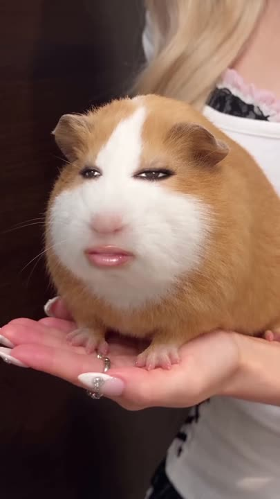
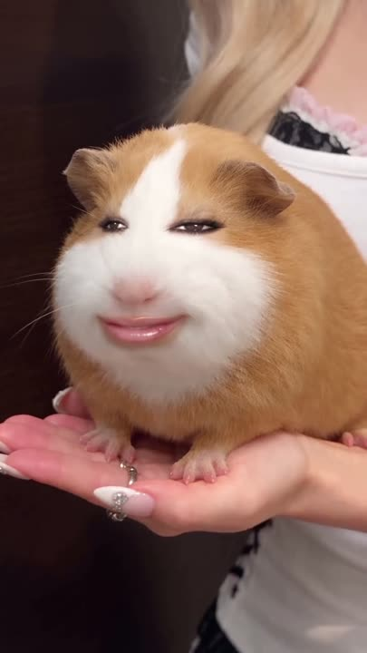
| 샷 크기 | CU |
|---|---|
| 앵글 | 아이레벨 |
| 카메라 무빙 | 고정 |
| 구도·위치 | 손바닥 위 캐릭터 중앙 |
| 동작·표정 | 우쭐한 미소 |
| 화면 자막 | 없음 |
| 다음 전환 | 하드컷 |
Smug grin in her palm. Vertical 9:16, photoreal, keep the character identical to the reference.
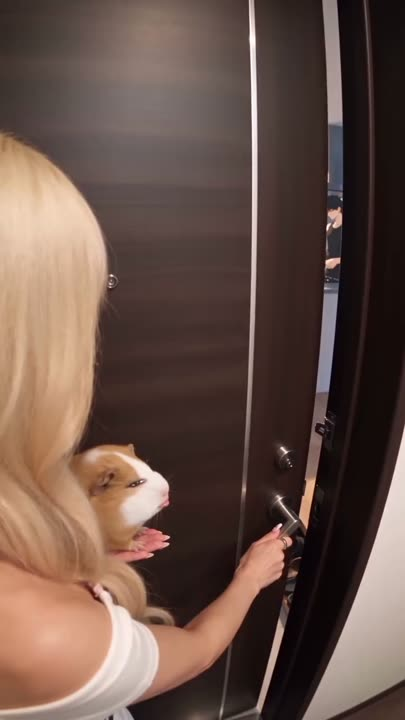
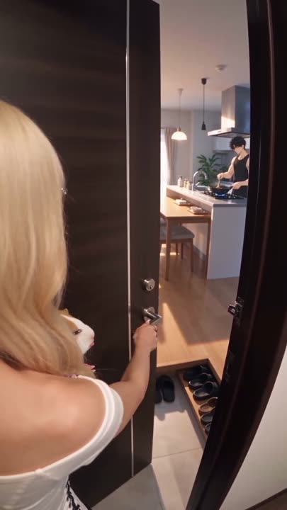
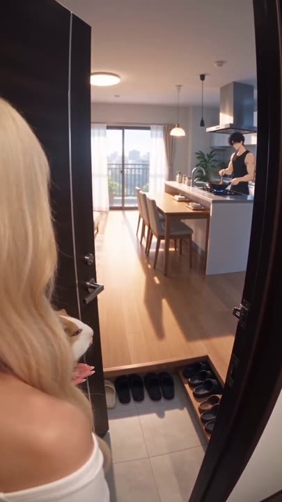
| 샷 크기 | POV |
|---|---|
| 앵글 | 아이레벨 |
| 카메라 무빙 | 핸드헬드 |
| 구도·위치 | 문 손잡이 → 틈으로 실내 |
| 동작·표정 | 문을 엶 |
| 화면 자막 | 없음 |
| 소리 | 문 소리 |
| 다음 전환 | 하드컷 |
POV: she opens the front door slowly. Vertical 9:16, photoreal, keep the character identical to the reference.
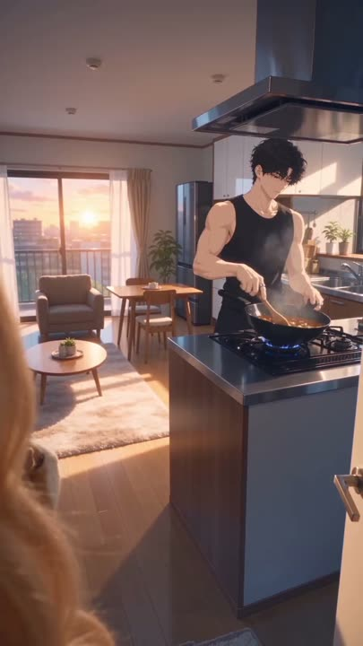
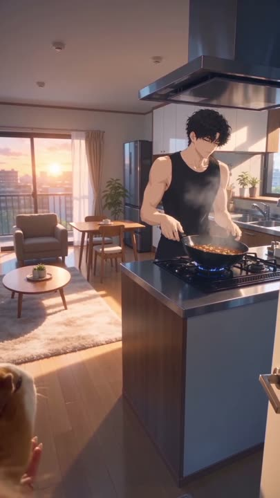
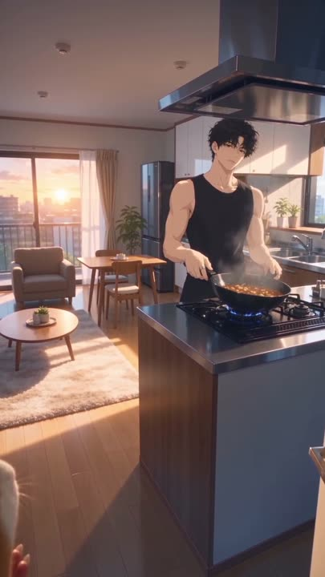
| 샷 크기 | WS |
|---|---|
| 앵글 | 아이레벨 |
| 카메라 무빙 | 고정 |
| 구도·위치 | 노을 부엌, 요리하는 남자 중앙 |
| 동작·표정 | 남자가 요리 중 |
| 화면 자막 | 없음 |
| 소리 | 지글 |
| 다음 전환 | 하드컷 |
wide shot of a stylish apartment kitchen at golden hour, a tall young man with black wavy hair in a black tank top cooking at a stove, hyperrealistic photograph, vertical 9:16, shot on a full-frame cinema camera, soft natural light, shallow depth of field, crisp individual fur strands, subtle film grain, no text, no watermark, no logo
He stir-fries in a wok. Static camera. Vertical 9:16, photoreal, keep the character identical to the reference.
| 샷 크기 | CU |
|---|---|
| 앵글 | 아이레벨 |
| 카메라 무빙 | 고정 |
| 구도·위치 | 주인 얼굴 가득 |
| 동작·표정 | 눈 커짐 |
| 화면 자막 | 잠깐, 진짜 개잘생겼잖아! |
| 소리 | 대사 |
| 다음 전환 | 하드컷 |
Her eyes widen in shock. Vertical 9:16, photoreal, keep the character identical to the reference.
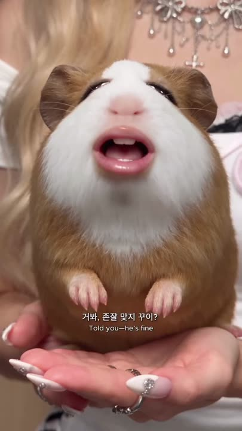
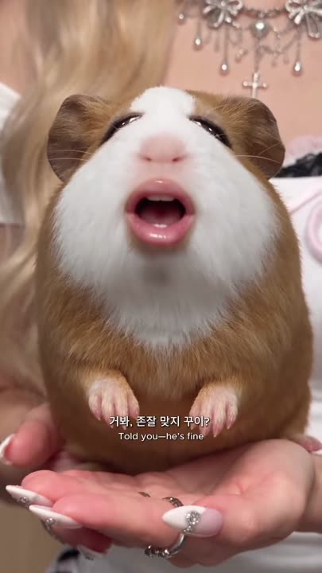
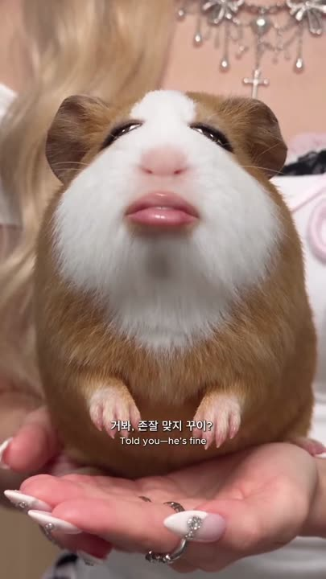
| 샷 크기 | CU |
|---|---|
| 앵글 | 아이레벨 |
| 카메라 무빙 | 고정 |
| 구도·위치 | 손바닥 위 캐릭터 |
| 동작·표정 | 자랑 |
| 화면 자막 | 거봐, 존잘 맞지 꾸이? |
| 소리 | '꾸이' |
| 다음 전환 | 하드컷 |
It says proudly. Vertical 9:16, photoreal, keep the character identical to the reference.
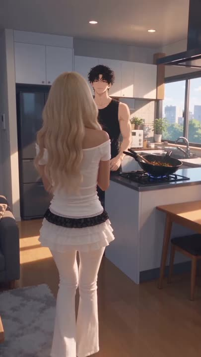
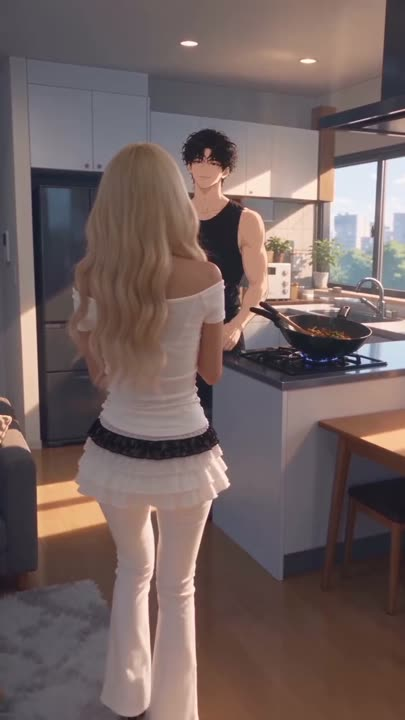
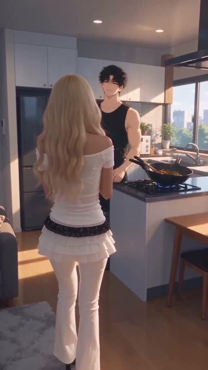
| 샷 크기 | MS |
|---|---|
| 앵글 | 아이레벨 |
| 카메라 무빙 | 고정 |
| 구도·위치 | 주인 뒷모습 |
| 화면 자막 | 없음 |
| 다음 전환 | 하드컷 |
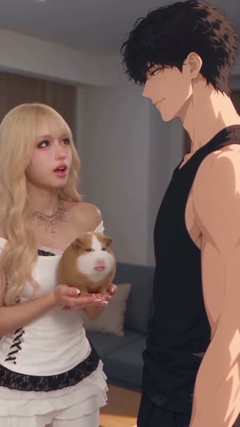
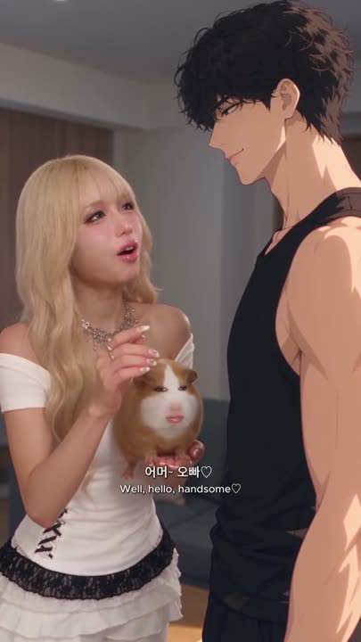
| 샷 크기 | MS |
|---|---|
| 앵글 | 아이레벨 |
| 카메라 무빙 | 고정 |
| 구도·위치 | 좌 주인(실사), 우 남자(2D 웹툰 그림체) |
| 동작·표정 | 주인이 애교 |
| 화면 자막 | 어머~ 오빠♡ |
| 소리 | 대사 |
| 다음 전환 | 하드컷 |
a real blonde woman holding a guinea-pig-like character next to a tall man drawn in flat 2D Korean webtoon (manhwa) style, black tank top, in a real kitchen — mixed media, hyperrealistic photograph, vertical 9:16, shot on a full-frame cinema camera, soft natural light, shallow depth of field, crisp individual fur strands, subtle film grain, no text, no watermark, no logo
She flirts; the 2D man stays stiff. Static camera. Vertical 9:16, photoreal, keep the character identical to the reference.
💡 실사+2D 혼합은 이미지 단계에서 합성(Nano Banana Pro)해 첫 프레임으로
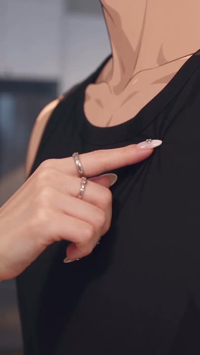
| 샷 크기 | ECU |
|---|---|
| 앵글 | 아이레벨 |
| 카메라 무빙 | 고정 |
| 구도·위치 | 손가락이 2D 가슴을 누름 |
| 화면 자막 | 없음 |
| 다음 전환 | 하드컷 |
Her finger pokes his flat drawn chest. Vertical 9:16, photoreal, keep the character identical to the reference.
| 샷 크기 | MS |
|---|---|
| 앵글 | 아이레벨 |
| 카메라 무빙 | 고정 |
| 구도·위치 | 남자 좌, 주인 우 |
| 동작·표정 | 이상함을 느낌 → 남자 머리가 종이처럼 벗겨짐 |
| 화면 자막 | 엥 이게 뭐지... |
| 소리 | 종이 바스락 |
| 다음 전환 | 하드컷 |
The man's head peels like a paper sticker. Static camera. Vertical 9:16, photoreal, keep the character identical to the reference.
| 샷 크기 | MS |
|---|---|
| 앵글 | 아이레벨 |
| 카메라 무빙 | 고정 |
| 구도·위치 | 주인이 종이 등신대를 들어 올림 |
| 동작·표정 | 허탈 |
| 화면 자막 | 어, 잠깐만. 스티커잖아..... / 미안하다 꾸이... |
| 소리 | 대사 |
| 다음 전환 | 영상 끝 |
She lifts the flat cardboard cutout of the man; the character looks guilty. Vertical 9:16, photoreal, keep the character identical to the reference.
실사 주인 컷 = Veo 3.1 · 캐릭터 = Kling v3 Omni · 2D 남자 혼합 컷 = 이미지에서 합성 후 Seedance 2.5
반전 컷(벗겨짐)은 편집으로도 가능: 남자를 투명 PNG로 얹고 페이지 컬(Page Curl) 전환.
예상 크레딧: 약 15컷 ≈ 약 500~800
| 시간 | 종류 | 길이 | 설명 | FFmpeg | CapCut | 프리미어/애펙 |
|---|---|---|---|---|---|---|
| 0.33 · 1.70 · 12.43 · 15.00 · 17.83 · 18.77 · 21.80 · 24.93 · 26.33 · 27.53 · 28.10 · 31.30 · 32.23 · 37.53초 | 하드 컷 | 0 | 편집 컷(또는 장면 구분) | 하드컷(concat) | 없음 | Cut |
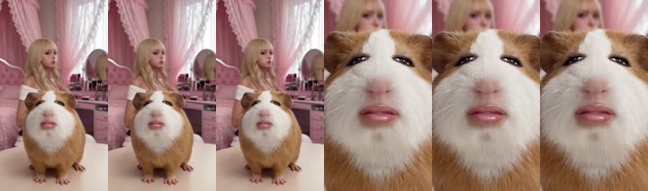
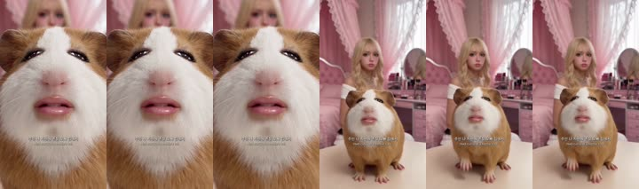
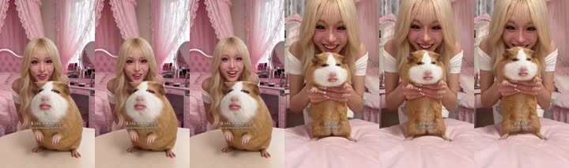
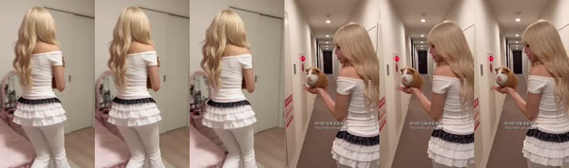
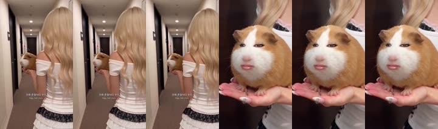
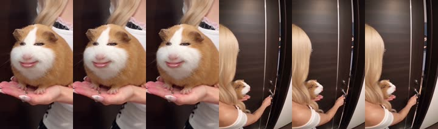
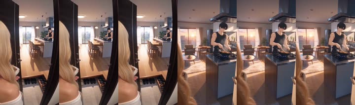
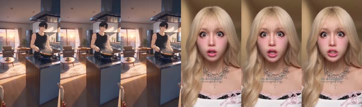
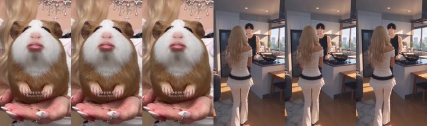
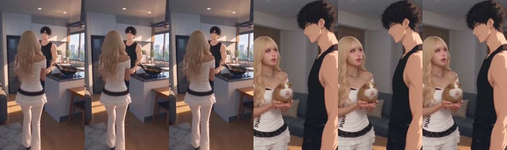
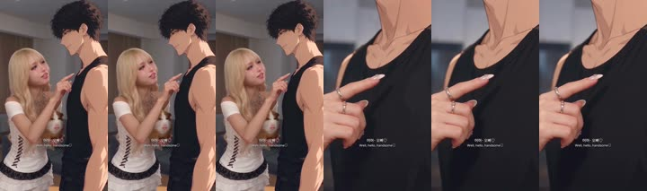
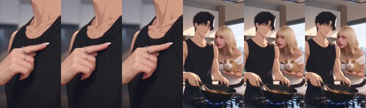
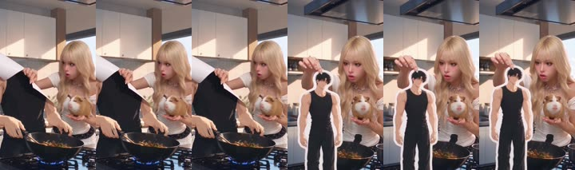
배경음악 + 대사. 캐릭터는 '꾸이', 주인은 한국어 대사. (세부 수치는 audio 섹션 이미지 참고)
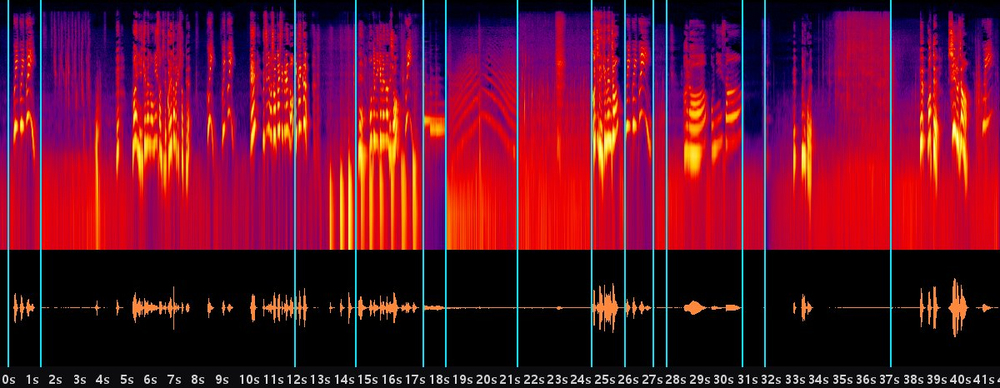
위: 스펙트로그램(세로 밝은 줄 = 타격음/효과음, 가로 줄무늬 = 목소리·멜로디), 아래: 파형. 하늘색 선 = 컷 위치. 측정: -14.4 LUFS · LRA 21.5 · 트루피크 -0.5 dBFS
| 시간(초) | 소리 | 메모 |
|---|---|---|
| 0–12.4 | 대화 + 잔잔한 BGM | |
| 21.8–27.5 | 설렘 효과음/음악 고조 | |
| 36–42 | 반전 후 허탈한 음악 |
주인 = Veo 3.1 또는 TTS, 캐릭터 = '꾸이'.
Suno v5.5 — playful rom-com K-drama style BGM, 100 BPM, pizzicato strings and light piano, a romantic swell at 22 seconds, a comedic deflating ending at 37 seconds, 42 seconds, instrumental
a paper sticker being peeled off slowly, 2 seconds
edl_rank9/ 안에 edl_rank9.json, clips/(S01.mp4…), fonts/(Pretendard-SemiBold.otf, NotoSansJP-SemiBold.ttf)python edl_render.py edl_rank9/edl_rank9.json
✅ 검증함: 더미 클립으로 실제 렌더 → 길이 정확(42.17초), 모든 샷이 제 시간 구간에 나오는지 색상 검사 통과, 한·영·일 3줄 자막·♬ 기호 렌더 확인. 결과: 1080×1920 · 30fps · H.264 CRF18 · AAC 192k · -14 LUFS / -1 dBTP.
[0:v]trim=start=0.000:end=0.330,setpts=PTS-STARTPTS,scale=1080:1920:force_original_aspect_ratio=increase,crop=1080:1920,fps=30,setsar=1,format=yuv420p,split=1[s0b]; [s0b]trim=start=0.000:end=0.330,setpts=PTS-STARTPTS[b0]; [1:v]trim=start=0.000:end=1.370,setpts=PTS-STARTPTS,scale=1080:1920:force_original_aspect_ratio=increase,crop=1080:1920,fps=30,setsar=1,format=yuv420p,split=1[s1b]; [s1b]trim=start=0.000:end=1.370,setpts=PTS-STARTPTS[b1]; [2:v]trim=start=0.000:end=10.730,setpts=PTS-STARTPTS,scale=1080:1920:force_original_aspect_ratio=increase,crop=1080:1920,fps=30,setsar=1,format=yuv420p,split=1[s2b]; [s2b]trim=start=0.000:end=10.730,setpts=PTS-STARTPTS[b2]; [3:v]trim=start=0.000:end=2.570,setpts=PTS-STARTPTS,scale=1080:1920:force_original_aspect_ratio=increase,crop=1080:1920,fps=30,setsar=1,format=yuv420p,split=1[s3b]; [s3b]trim=start=0.000:end=2.570,setpts=PTS-STARTPTS[b3]; [4:v]trim=start=0.000:end=2.830,setpts=PTS-STARTPTS,scale=1080:1920:force_original_aspect_ratio=increase,crop=1080:1920,fps=30,setsar=1,format=yuv420p,split=1[s4b]; [s4b]trim=start=0.000:end=2.830,setpts=PTS-STARTPTS[b4]; [5:v]trim=start=0.000:end=0.940,setpts=PTS-STARTPTS,scale=1080:1920:force_original_aspect_ratio=increase,crop=1080:1920,fps=30,setsar=1,format=yuv420p,split=1[s5b]; [s5b]trim=start=0.000:end=0.940,setpts=PTS-STARTPTS[b5]; [6:v]trim=start=0.000:end=3.030,setpts=PTS-STARTPTS,scale=1080:1920:force_original_aspect_ratio=increase,crop=1080:1920,fps=30,setsar=1,format=yuv420p,split=1[s6b]; [s6b]trim=start=0.000:end=3.030,setpts=PTS-STARTPTS[b6]; [7:v]trim=start=0.000:end=3.130,setpts=PTS-STARTPTS,scale=1080:1920:force_original_aspect_ratio=increase,crop=1080:1920,fps=30,setsar=1,format=yuv420p,split=1[s7b]; [s7b]trim=start=0.000:end=3.130,setpts=PTS-STARTPTS[b7]; [8:v]trim=start=0.000:end=1.400,setpts=PTS-STARTPTS,scale=1080:1920:force_original_aspect_ratio=increase,crop=1080:1920,fps=30,setsar=1,format=yuv420p,split=1[s8b]; [s8b]trim=start=0.000:end=1.400,setpts=PTS-STARTPTS[b8]; [9:v]trim=start=0.000:end=1.200,setpts=PTS-STARTPTS,scale=1080:1920:force_original_aspect_ratio=increase,crop=1080:1920,fps=30,setsar=1,format=yuv420p,split=1[s9b]; [s9b]trim=start=0.000:end=1.200,setpts=PTS-STARTPTS[b9]; [10:v]trim=start=0.000:end=0.570,setpts=PTS-STARTPTS,scale=1080:1920:force_original_aspect_ratio=increase,crop=1080:1920,fps=30,setsar=1,format=yuv420p,split=1[s10b]; [s10b]trim=start=0.000:end=0.570,setpts=PTS-STARTPTS[b10]; [11:v]trim=start=0.000:end=3.200,setpts=PTS-STARTPTS,scale=1080:1920:force_original_aspect_ratio=increase,crop=1080:1920,fps=30,setsar=1,format=yuv420p,split=1[s11b]; [s11b]trim=start=0.000:end=3.200,setpts=PTS-STARTPTS[b11]; [12:v]trim=start=0.000:end=0.930,setpts=PTS-STARTPTS,scale=1080:1920:force_original_aspect_ratio=increase,crop=1080:1920,fps=30,setsar=1,format=yuv420p,split=1[s12b]; [s12b]trim=start=0.000:end=0.930,setpts=PTS-STARTPTS[b12]; [13:v]trim=start=0.000:end=5.300,setpts=PTS-STARTPTS,scale=1080:1920:force_original_aspect_ratio=increase,crop=1080:1920,fps=30,setsar=1,format=yuv420p,split=1[s13b]; [s13b]trim=start=0.000:end=5.300,setpts=PTS-STARTPTS[b13]; [14:v]trim=start=0.000:end=4.640,setpts=PTS-STARTPTS,scale=1080:1920:force_original_aspect_ratio=increase,crop=1080:1920,fps=30,setsar=1,format=yuv420p,split=1[s14b]; [s14b]trim=start=0.000:end=4.640,setpts=PTS-STARTPTS[b14]; [b0][b1][b2][b3][b4][b5][b6][b7][b8][b9][b10][b11][b12][b13][b14]concat=n=15:v=1:a=0[vcat]; [vcat]ass=subs.ass:fontsdir=fonts[vout]; [0:a]atrim=start=0.000:end=0.330,asetpts=PTS-STARTPTS,aresample=48000,aformat=channel_layouts=stereo,apad,atrim=end=0.330[a0]; [1:a]atrim=start=0.000:end=1.370,asetpts=PTS-STARTPTS,aresample=48000,aformat=channel_layouts=stereo,apad,atrim=end=1.370[a1]; [2:a]atrim=start=0.000:end=10.730,asetpts=PTS-STARTPTS,aresample=48000,aformat=channel_layouts=stereo,apad,atrim=end=10.730[a2]; [3:a]atrim=start=0.000:end=2.570,asetpts=PTS-STARTPTS,aresample=48000,aformat=channel_layouts=stereo,apad,atrim=end=2.570[a3]; [4:a]atrim=start=0.000:end=2.830,asetpts=PTS-STARTPTS,aresample=48000,aformat=channel_layouts=stereo,apad,atrim=end=2.830[a4]; [5:a]atrim=start=0.000:end=0.940,asetpts=PTS-STARTPTS,aresample=48000,aformat=channel_layouts=stereo,apad,atrim=end=0.940[a5]; [6:a]atrim=start=0.000:end=3.030,asetpts=PTS-STARTPTS,aresample=48000,aformat=channel_layouts=stereo,apad,atrim=end=3.030[a6]; [7:a]atrim=start=0.000:end=3.130,asetpts=PTS-STARTPTS,aresample=48000,aformat=channel_layouts=stereo,apad,atrim=end=3.130[a7]; [8:a]atrim=start=0.000:end=1.400,asetpts=PTS-STARTPTS,aresample=48000,aformat=channel_layouts=stereo,apad,atrim=end=1.400[a8]; [9:a]atrim=start=0.000:end=1.200,asetpts=PTS-STARTPTS,aresample=48000,aformat=channel_layouts=stereo,apad,atrim=end=1.200[a9]; [10:a]atrim=start=0.000:end=0.570,asetpts=PTS-STARTPTS,aresample=48000,aformat=channel_layouts=stereo,apad,atrim=end=0.570[a10]; [11:a]atrim=start=0.000:end=3.200,asetpts=PTS-STARTPTS,aresample=48000,aformat=channel_layouts=stereo,apad,atrim=end=3.200[a11]; [12:a]atrim=start=0.000:end=0.930,asetpts=PTS-STARTPTS,aresample=48000,aformat=channel_layouts=stereo,apad,atrim=end=0.930[a12]; [13:a]atrim=start=0.000:end=5.300,asetpts=PTS-STARTPTS,aresample=48000,aformat=channel_layouts=stereo,apad,atrim=end=5.300[a13]; [14:a]atrim=start=0.000:end=4.640,asetpts=PTS-STARTPTS,aresample=48000,aformat=channel_layouts=stereo,apad,atrim=end=4.640[a14]; [a0][a1][a2][a3][a4][a5][a6][a7][a8][a9][a10][a11][a12][a13][a14]concat=n=15:v=0:a=1,volume=1.0[clip]; [clip]amix=inputs=1:normalize=0:dropout_transition=0,apad,atrim=end=42.170,loudnorm=I=-14:TP=-1.0:LRA=11,aresample=48000[aout]
/hyperframes 스킬로 kit/hyperframes/rank9/index.html 컴포지션을 작업해줘. 이 파일은 edl_rank9.json 편집표에서 자동 생성된 것이고 컷 타이밍·전환·자막 위치가 원본 측정값과 같다. 수정 가능 범위: clips/ 파일 교체, 자막 문장, 전환 강도만. 규칙: 1) clips/ fonts/ 폴더를 index.html 옆에 둔다 2) npx hyperframes check 0건 통과 3) 문제 컷은 npx hyperframes snapshot --at 으로 확인 4) npx hyperframes preview --background 로 내가 확인한 뒤, 내가 승인하면 render. 승인 전 render 금지.
생성된 파일: kit/hyperframes/rank9/index.html · 자체 규칙 검사 통과(중복 id·audio id·crossorigin·<br>). ⚠️ HyperFrames CLI가 이 PC에 없어 npx hyperframes check는 아직 못 돌렸습니다.
| 영상 모델 | Pollo ID | 스펙(실측 조회) | 이런 컷에 |
|---|---|---|---|
| Seedance 2.5 | bytedance/seedance-2-5 | 이미지→영상·레퍼런스→영상 / 4~30초 / 최대 1080p / 첫·끝 프레임 / 네이티브 오디오 / 참조 이미지 최대 30장 | 원작자 캡션에 #capcutseedance25 표기 → 같은 계열. 긴 원테이크·캐릭터 일관성·음성까지 한 번에 |
| Kling v3 Omni | kling-ai/kling-v3-omni | 3~15초 / std·pro·4K / 첫·끝 프레임 / 네이티브 오디오 / 레퍼런스→영상 | 표정 연기·손으로 소품 다루기·두 캐릭터 동시 연기에 강한 편(일반 평판) |
| MiniMax H3 | minimax/minimax-h3 (고품질: minimax-h3-max) | 4~15초 / 최대 2K / 첫·끝 프레임 / 레퍼런스→영상 / 오디오 옵션 없음(후반에 효과음) | 튀김·반죽·팝콘 폭발 같은 물리 움직임이 강한 편(하이루오 계열 평판) |
| Google Gemini Omni 1.1 Flash | google/gemini-omni-1-1-flash | 3~10초 / 9:16 / 최대 4K / 첫·끝 프레임 / 레퍼런스→영상 | 9:16 네이티브·4K 지원 → 음식 클로즈업·인서트 컷 화질용 (품질은 테스트 필요) |
| Google Veo 3.1 | google/veo-3-1 | 4·6·8초 / 9:16 / 1080p·4K / 첫·끝 프레임 / 네이티브 오디오(대사) | 사람 배우 + 한국어 대사 립싱크가 필요한 컷(3위 보디빌더, 2위 부모님 대사) |
| Hailuo 2.3 | minimax/hailuo-2-3 | 6·10초 / 768p·1080p(6초만) / 끝 프레임 없음 | 0.4~1초짜리 짧은 인서트를 싸게 뽑을 때 |
| Nano Banana Pro | google/nano-banana-pro | 캐릭터 시트를 참조로 넣고 샷별 첫 프레임 만들기(일관성 1순위) |
| Seedream 5.0 Pro | bytedance/seedream-5-0-pro | Seedance와 같은 회사 — 실사 털·음식 질감 |
| GPT Image 2 | openai/gpt-image-2 | 소품·간판·포장지 디테일 수정 |
| Flux Kontext Max | flux/flux-kontext-max | 기존 키프레임 부분 수정(표정만 바꾸기 등) |
| Suno v5.5 | suno/suno-v5-5 | 배경음악(징글) — 1회 2곡 생성, 18크레딧 |
| ElevenLabs v3 | elevenlabs/eleven-v3 | 사람 대사(한국어) TTS |
| MiniMax Speech 2.8 HD | minimax/speech-2-8-hd | 한국어 대사 TTS 대안 |
| Seed Audio 1.0 | bytedance/seed-audio-1-0 | TTS 대안 |
| Seedance 2.5 · 1080p · 12초 · 오디오 | 720 (할인 288) |
| Seedance 2.5 · 720p · 5초 · 오디오 | 150 (할인 60) |
| Kling v3 Omni · pro · 5초 · 오디오 | 50 (할인 20) |
| MiniMax H3 · 768p · 5초 | 50 |
| Google Omni 1.1 Flash · 1080p · 5초 | 50 |
| Veo 3.1 · 1080p · 4초 · 오디오 | 120 (할인 48) |
| Nano Banana Pro 이미지 1장 | 18 (할인 9) |
| Suno v5.5 음악 (2곡) | 18 |
| 단계 | 할 일 | 크레딧 |
|---|---|---|
| ① 캐릭터 시트 | Nano Banana Pro로 [CHARACTER] 시트 1장 (정면·측면·후면·얼굴). 이후 모든 컷의 참조 이미지로 사용 | 9~18 크레딧 |
| ② 샷별 첫 프레임 | 각 샷의 '이미지 프롬프트' + 캐릭터 시트 참조 → 키프레임 생성. 원본 캡처와 구도 비교 | 샷 수 × 9~18 |
| ③ 샷별 영상 | 키프레임을 첫 프레임으로 넣고 '영상 프롬프트' 실행. 필요한 길이보다 0.5초 이상 길게 | 모델별 표 참고 |
| ④ 사운드 | 네이티브 오디오 확인 → 부족하면 효과음/음악/보이스 추가 (사운드 섹션) | 0~20 |
| ⑤ 파일 정리 | clips/S01.mp4 … 편집표(EDL)의 파일명 그대로 저장, fonts/에 Pretendard·Noto Sans JP | 무료 |
| ⑥ 자동 편집 | python edl_render.py edl_xxx.json → 원본과 같은 컷 타이밍·전환·3줄 자막·-14 LUFS | 무료 |
| ⑦ (선택) HyperFrames | hyperframes/폴더의 index.html로 Studio에서 미세 조정 → npx hyperframes check → render | 무료 |